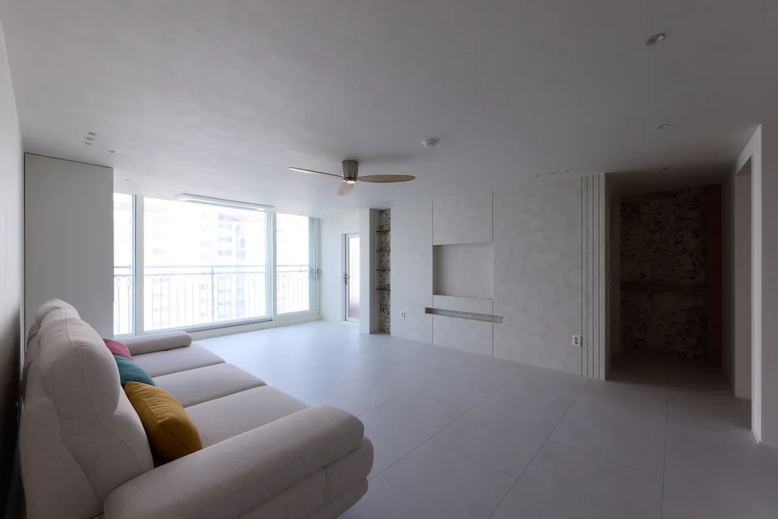
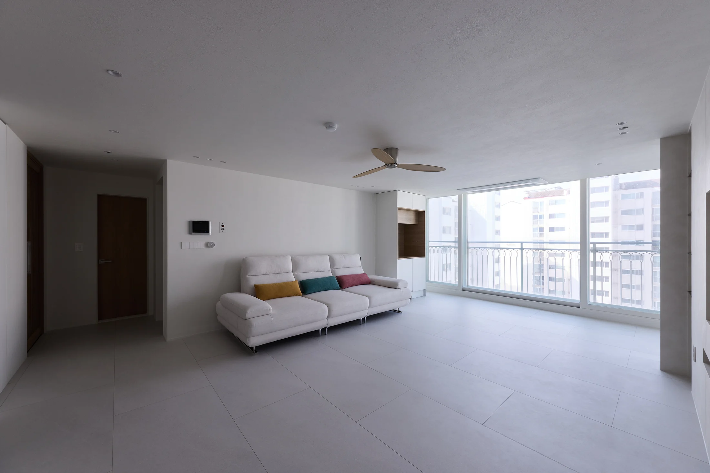
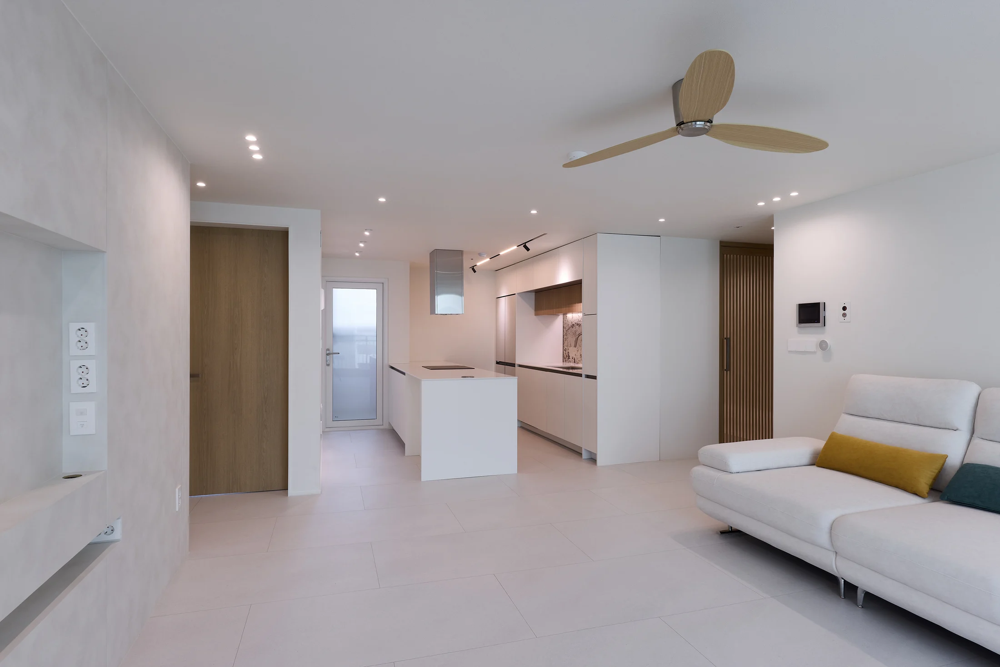
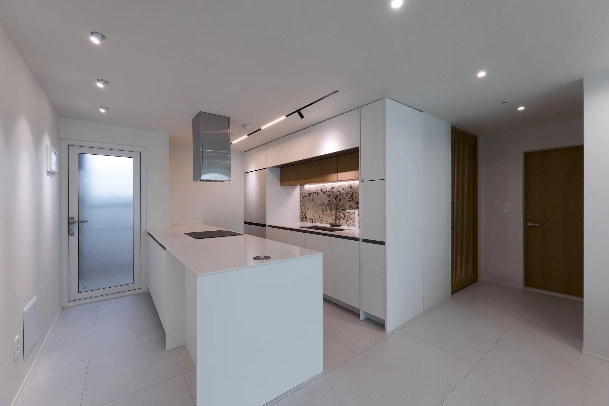
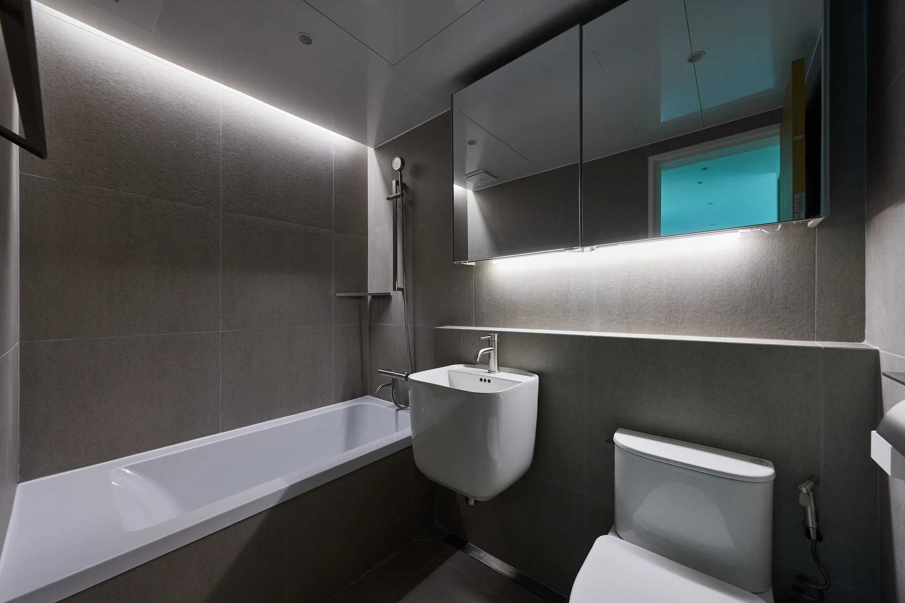

기존 상태
공간별 마감과 수납의 연결을 다시 정리해야 했던 32평 아파트 현장입니다.
설계 판단
화이트와 우드를 기본으로 두고, 가까이에서 보이는 면에는 질감 포인트를 사용했습니다.
주요 시공
거실과 주방의 흐름, 수납 구성, 침실과 욕실의 마감선을 하나의 기준으로 맞췄습니다.
완공 결과
밝은 바탕 안에서 우드와 재료의 질감이 과하지 않게 드러나는 집으로 완성했습니다.

공간별 마감과 수납의 연결을 다시 정리해야 했던 32평 아파트 현장입니다.
화이트와 우드를 기본으로 두고, 가까이에서 보이는 면에는 질감 포인트를 사용했습니다.
거실과 주방의 흐름, 수납 구성, 침실과 욕실의 마감선을 하나의 기준으로 맞췄습니다.
밝은 바탕 안에서 우드와 재료의 질감이 과하지 않게 드러나는 집으로 완성했습니다.



